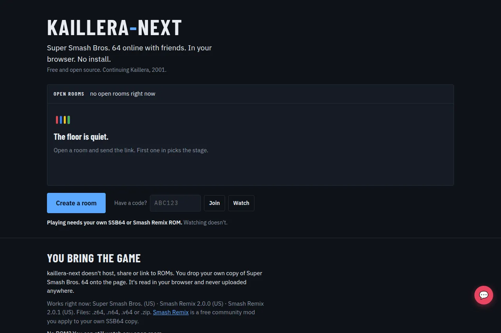

Building
Kaillera Next
Open a link and play supported N64 games with friends, nothing to install.
In development · playable demo build

Rollback · Diagram
Guess a late input, keep playing,and rewind if the guess was wrong.
thesuperhuman.us/building/kaillera-next